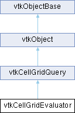

|
Etrek
|
|
Etrek
|
Evaluate a field (vtkCellAttribute) at some points inside cells. More...
#include <vtkCellGridEvaluator.h>

Classes | |
| struct | AllocationsByCellType |
| Hold per-type input point assignment and an offset for output arrays. More... | |
Public Types | |
| enum | Phases { None , Classify , ClassifyAndInterpolate , Interpolate } |
| Indicate which phases of the query to perform. | |
Public Member Functions | |
| vtkTypeMacro (vtkCellGridEvaluator, vtkCellGridQuery) | |
| void | PrintSelf (ostream &os, vtkIndent indent) override |
| vtkSetObjectMacro (CellAttribute, vtkCellAttribute) | |
| vtkGetObjectMacro (CellAttribute, vtkCellAttribute) | |
| vtkGetObjectMacro (InputPoints, vtkDataArray) | |
| vtkGetObjectMacro (ClassifierCellTypes, vtkTypeUInt32Array) | |
| Get the discovered types of cells containing input points. | |
| vtkGetObjectMacro (ClassifierCellOffsets, vtkTypeUInt64Array) | |
| Get the offset into the result arrays where each cell-type's points reside. | |
| vtkGetObjectMacro (ClassifierPointIDs, vtkTypeUInt64Array) | |
| Get the array holding indices into the InputPoints array of each output. | |
| vtkGetObjectMacro (ClassifierCellIndices, vtkTypeUInt64Array) | |
| Get the array holding indices into cells of a given type that contain input points. | |
| vtkGetObjectMacro (ClassifierPointParameters, vtkDataArray) | |
| Get the array holding (r, s, t)-coordinates where each input point is located. | |
| vtkGetObjectMacro (InterpolatedValues, vtkDataArray) | |
| Get the array holding cell-attribute values interpolated to each input point. | |
| void | ClassifyPoints (vtkDataArray *points) |
| Configure the query to run the classifier but not the interpolator. | |
| void | InterpolatePoints (vtkDataArray *points) |
| Configure the query to run the classifier followed by the interpolator. | |
| void | InterpolateCellParameters (vtkTypeUInt32Array *cellTypes, vtkTypeUInt64Array *cellOffsets, vtkTypeUInt64Array *cellIndices, vtkDataArray *pointParameters) |
| vtkGetEnumMacro (PhasesToPerform, vtkCellGridEvaluator::Phases) | |
| Return what work the query has been configured to do. | |
| bool | Initialize () override |
| Invoked during evaluation before any cell-grid responders are run. | |
| void | StartPass () override |
| Invoked at the start of each pass. | |
| bool | IsAnotherPassRequired () override |
| Invoked at the end of each pass. | |
| bool | Finalize () override |
| Invoked during evaluation after all cell-grid responders are run. | |
| vtkGetObjectMacro (Locator, vtkStaticPointLocator) | |
| AllocationsByCellType & | GetAllocationsForCellType (vtkStringToken cellType) |
| Public Member Functions inherited from vtkCellGridQuery | |
| vtkTypeMacro (vtkCellGridQuery, vtkObject) | |
| void | PrintSelf (ostream &os, vtkIndent indent) override |
| vtkGetMacro (Pass, int) | |
| Return the current pass (the number of times each responder has been evaluated so far). | |
| Public Member Functions inherited from vtkObject | |
| vtkBaseTypeMacro (vtkObject, vtkObjectBase) | |
| virtual void | DebugOn () |
| virtual void | DebugOff () |
| bool | GetDebug () |
| void | SetDebug (bool debugFlag) |
| virtual void | Modified () |
| virtual vtkMTimeType | GetMTime () |
| void | PrintSelf (ostream &os, vtkIndent indent) override |
| void | RemoveObserver (unsigned long tag) |
| void | RemoveObservers (unsigned long event) |
| void | RemoveObservers (const char *event) |
| void | RemoveAllObservers () |
| vtkTypeBool | HasObserver (unsigned long event) |
| vtkTypeBool | HasObserver (const char *event) |
| vtkTypeBool | InvokeEvent (unsigned long event) |
| vtkTypeBool | InvokeEvent (const char *event) |
| std::string | GetObjectDescription () const override |
| unsigned long | AddObserver (unsigned long event, vtkCommand *, float priority=0.0f) |
| unsigned long | AddObserver (const char *event, vtkCommand *, float priority=0.0f) |
| vtkCommand * | GetCommand (unsigned long tag) |
| void | RemoveObserver (vtkCommand *) |
| void | RemoveObservers (unsigned long event, vtkCommand *) |
| void | RemoveObservers (const char *event, vtkCommand *) |
| vtkTypeBool | HasObserver (unsigned long event, vtkCommand *) |
| vtkTypeBool | HasObserver (const char *event, vtkCommand *) |
| template<class U, class T> | |
| unsigned long | AddObserver (unsigned long event, U observer, void(T::*callback)(), float priority=0.0f) |
| template<class U, class T> | |
| unsigned long | AddObserver (unsigned long event, U observer, void(T::*callback)(vtkObject *, unsigned long, void *), float priority=0.0f) |
| template<class U, class T> | |
| unsigned long | AddObserver (unsigned long event, U observer, bool(T::*callback)(vtkObject *, unsigned long, void *), float priority=0.0f) |
| vtkTypeBool | InvokeEvent (unsigned long event, void *callData) |
| vtkTypeBool | InvokeEvent (const char *event, void *callData) |
| virtual void | SetObjectName (const std::string &objectName) |
| virtual std::string | GetObjectName () const |
| Public Member Functions inherited from vtkObjectBase | |
| const char * | GetClassName () const |
| virtual vtkTypeBool | IsA (const char *name) |
| virtual vtkIdType | GetNumberOfGenerationsFromBase (const char *name) |
| virtual void | Delete () |
| virtual void | FastDelete () |
| void | InitializeObjectBase () |
| void | Print (ostream &os) |
| void | Register (vtkObjectBase *o) |
| virtual void | UnRegister (vtkObjectBase *o) |
| int | GetReferenceCount () |
| void | SetReferenceCount (int) |
| bool | GetIsInMemkind () const |
| virtual void | PrintHeader (ostream &os, vtkIndent indent) |
| virtual void | PrintTrailer (ostream &os, vtkIndent indent) |
| virtual bool | UsesGarbageCollector () const |
Static Public Member Functions | |
| static vtkCellGridEvaluator * | New () |
| Static Public Member Functions inherited from vtkObject | |
| static vtkObject * | New () |
| static void | BreakOnError () |
| static void | SetGlobalWarningDisplay (vtkTypeBool val) |
| static void | GlobalWarningDisplayOn () |
| static void | GlobalWarningDisplayOff () |
| static vtkTypeBool | GetGlobalWarningDisplay () |
| Static Public Member Functions inherited from vtkObjectBase | |
| static vtkTypeBool | IsTypeOf (const char *name) |
| static vtkIdType | GetNumberOfGenerationsFromBaseType (const char *name) |
| static vtkObjectBase * | New () |
| static void | SetMemkindDirectory (const char *directoryname) |
| static bool | GetUsingMemkind () |
Protected Member Functions | |
| vtkSetObjectMacro (InputPoints, vtkDataArray) | |
| vtkSetObjectMacro (ClassifierCellTypes, vtkTypeUInt32Array) | |
| Set the discovered types of cells containing input points. | |
| vtkSetObjectMacro (ClassifierCellOffsets, vtkTypeUInt64Array) | |
| Set the offset into the result arrays where each cell-type's points reside. | |
| vtkSetObjectMacro (ClassifierPointIDs, vtkTypeUInt64Array) | |
| Set the array holding indices into the InputPoints array of each output. | |
| vtkSetObjectMacro (ClassifierCellIndices, vtkTypeUInt64Array) | |
| Set the array holding indices into cells of a given type that contain input points. | |
| vtkSetObjectMacro (ClassifierPointParameters, vtkDataArray) | |
| Set the array holding (r, s, t)-coordinates where each input point is located. | |
| vtkSetObjectMacro (InterpolatedValues, vtkDataArray) | |
| Set the array holding cell-attribute values interpolated to each input point. | |
| void | AllocateClassificationOutput () |
| void | AllocatePositionOutput () |
| void | AllocateInterpolationOutput () |
| Protected Member Functions inherited from vtkObject | |
| void | RegisterInternal (vtkObjectBase *, vtkTypeBool check) override |
| void | UnRegisterInternal (vtkObjectBase *, vtkTypeBool check) override |
| void | InternalGrabFocus (vtkCommand *mouseEvents, vtkCommand *keypressEvents=nullptr) |
| void | InternalReleaseFocus () |
| Protected Member Functions inherited from vtkObjectBase | |
| virtual void | ReportReferences (vtkGarbageCollector *) |
| vtkObjectBase (const vtkObjectBase &) | |
| void | operator= (const vtkObjectBase &) |
Protected Attributes | |
| vtkCellGrid * | CellGrid { nullptr } |
| vtkCellAttribute * | CellAttribute { nullptr } |
| vtkDataArray * | InputPoints { nullptr } |
| vtkTypeUInt32Array * | ClassifierCellTypes { nullptr } |
| vtkTypeUInt64Array * | ClassifierCellOffsets { nullptr } |
| vtkTypeUInt64Array * | ClassifierPointIDs { nullptr } |
| vtkTypeUInt64Array * | ClassifierCellIndices { nullptr } |
| vtkDataArray * | ClassifierPointParameters { nullptr } |
| vtkDataArray * | InterpolatedValues { nullptr } |
| vtkNew< vtkStaticPointLocator > | Locator |
| Phases | PhasesToPerform { Phases::None } |
| Which of the phases are the arrays above configured to perform? | |
| vtkIdType | NumberOfOutputPoints { 0 } |
| The total number of output points (across all cell types). | |
| std::unordered_map< vtkStringToken, AllocationsByCellType > | Allocations |
| Internal state used during classification to compute the size of the output arrays. | |
| Protected Attributes inherited from vtkCellGridQuery | |
| int | Pass { -1 } |
| Protected Attributes inherited from vtkObject | |
| bool | Debug |
| vtkTimeStamp | MTime |
| vtkSubjectHelper * | SubjectHelper |
| std::string | ObjectName |
| Protected Attributes inherited from vtkObjectBase | |
| std::atomic< int32_t > | ReferenceCount |
| vtkWeakPointerBase ** | WeakPointers |
Additional Inherited Members | |
| Static Protected Member Functions inherited from vtkObjectBase | |
| static vtkMallocingFunction | GetCurrentMallocFunction () |
| static vtkReallocingFunction | GetCurrentReallocFunction () |
| static vtkFreeingFunction | GetCurrentFreeFunction () |
| static vtkFreeingFunction | GetAlternateFreeFunction () |
Evaluate a field (vtkCellAttribute) at some points inside cells.
This class is a cell-grid query whose purpose is to determine the value a vtkCellAttribute takes on at one or more points inside the domain of a vtkCellGrid.
This class performs its work in two phases:
As an example, consider a cell-grid holding 10 triangles and 20 quads and a query that is provided 5 points. The first phase will identify which of the 5 points are insides triangles, which lie in quadrilaterals, and which lie in neither. Say that 2 lie inside triangles, 2 inside quadrilaterals, and 1 is outside the domain. Furthermore, the first phase will identify which particular triangles or quadrilaterals contain the input points. The two points which lie in triangles will report a number in [0,10[ while the two points which lie in quadrilaterals will report a number in [0, 20[. Finally, for cells which have a reference element, the parametric coordinates of each input point are computed.
The second phase additionally interpolates a cell-attribute (let's say "Velocity" in our example) at each input point.
You may configure the query to skip either phase (classification or interpolation). If you skip classification, you must provide the the classification information for the input points. The method you call (ClassifyPoints, InterpolatePoints, or InterpolateCellParameters) determines which phase(s) are applied during evaluation.
When running in InterpolatePoints mode (both classification and interpolation phases are performed), the output from our example is reported like so:
Note that because you can pass in the arrays above (except the interpolated values) to short-circuit classification, it is possible to evaluate multiple cell-attributes without duplicating the classification work.
In InterpolateCellParameters mode, calling the methods above which begin with GetClassifier… will simply return the input arrays you passed to configure the query.
The output arrays above generally match the number of input points, but will sometimes exceed the number of input points. This will occur when multiple cells contain an input point (either on a shared boundary or because the cells overlap).
Note that the output should never have fewer points than the input as even points outside the cells will be classified as such.
Currently, this class is limited to evaluating numeric attributes; string or variant arrays are not supported.
|
overridevirtual |
Invoked during evaluation after all cell-grid responders are run.
Reimplemented from vtkCellGridQuery.
| AllocationsByCellType & vtkCellGridEvaluator::GetAllocationsForCellType | ( | vtkStringToken | cellType | ) |
Return a reference to a cellType's allocated input points for responders to fill out.
|
overridevirtual |
Invoked during evaluation before any cell-grid responders are run.
Reimplemented from vtkCellGridQuery.
| void vtkCellGridEvaluator::InterpolateCellParameters | ( | vtkTypeUInt32Array * | cellTypes, |
| vtkTypeUInt64Array * | cellOffsets, | ||
| vtkTypeUInt64Array * | cellIndices, | ||
| vtkDataArray * | pointParameters ) |
Configure the query to run only the interpolator.
Because interpolation usually requires classification information and parametric coordinates for each classified point, you must provide arrays holding this information.
|
overridevirtual |
Invoked at the end of each pass.
Reimplemented from vtkCellGridQuery.
|
overridevirtual |
Methods invoked by print to print information about the object including superclasses. Typically not called by the user (use Print() instead) but used in the hierarchical print process to combine the output of several classes.
Reimplemented from vtkObjectBase.
|
overridevirtual |
Invoked at the start of each pass.
Reimplemented from vtkCellGridQuery.
| vtkCellGridEvaluator::vtkGetObjectMacro | ( | InputPoints | , |
| vtkDataArray | ) |
Get the input points to be classified and possibly interpolated. These points are in world coordinates (not in reference cell coordinates).
| vtkCellGridEvaluator::vtkSetObjectMacro | ( | CellAttribute | , |
| vtkCellAttribute | ) |
Set/get the cell-attribute to be evaluated.
This must be set before the query is evaluated.
|
protected |
Set the input points to be classified and possibly interpolated. These points are in world coordinates (not in reference cell coordinates).